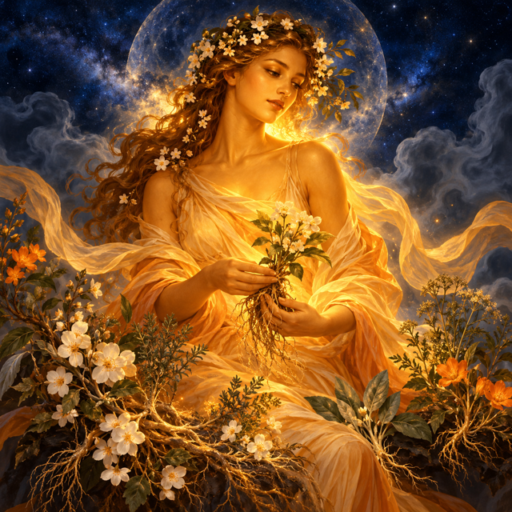
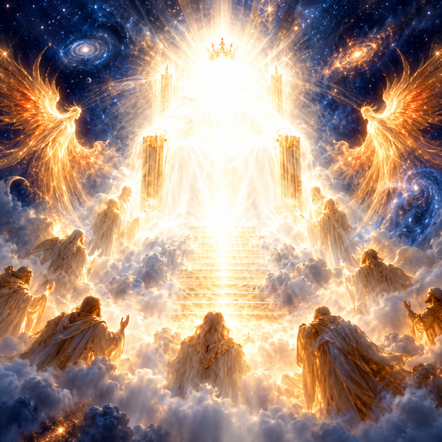
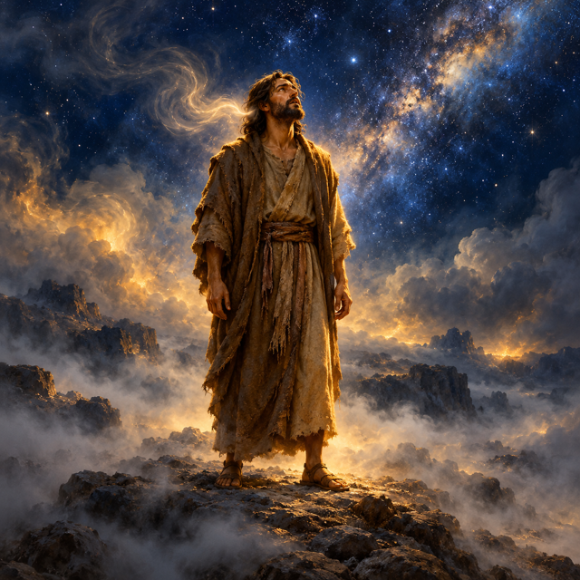
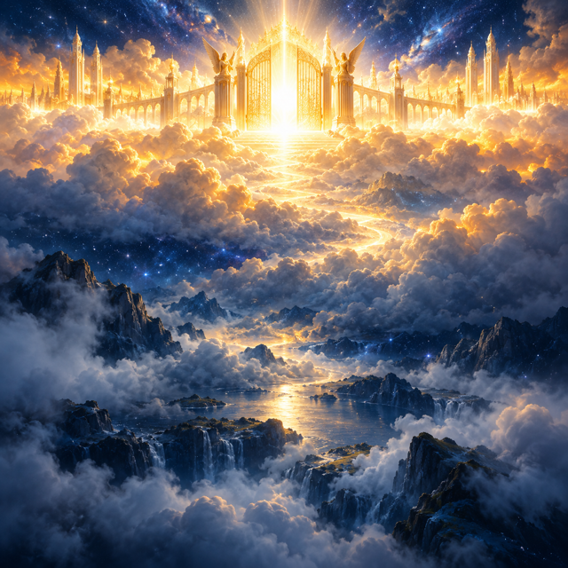
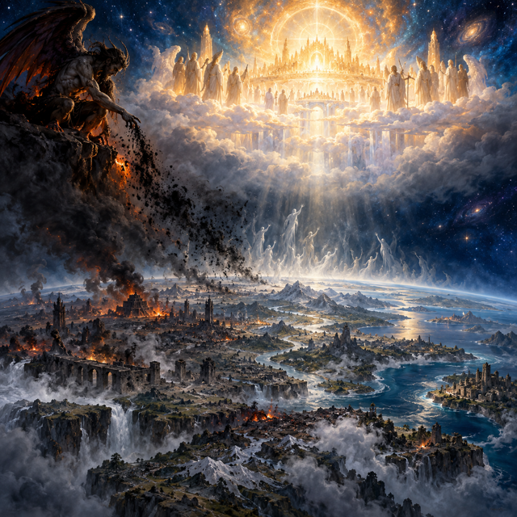
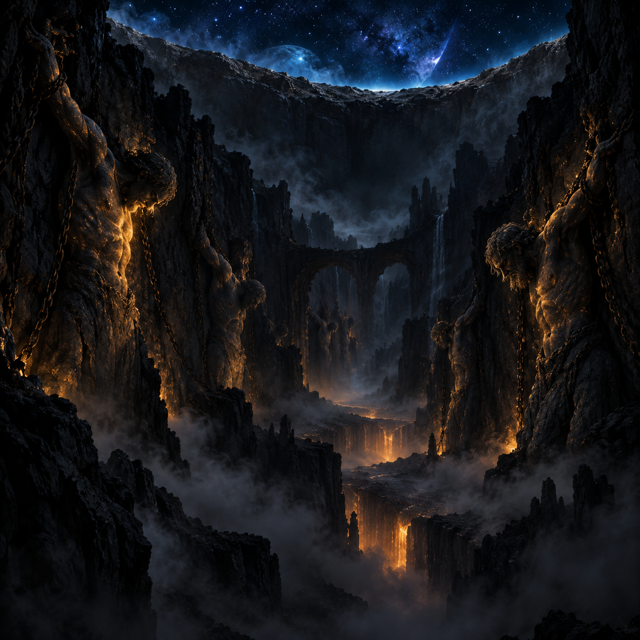
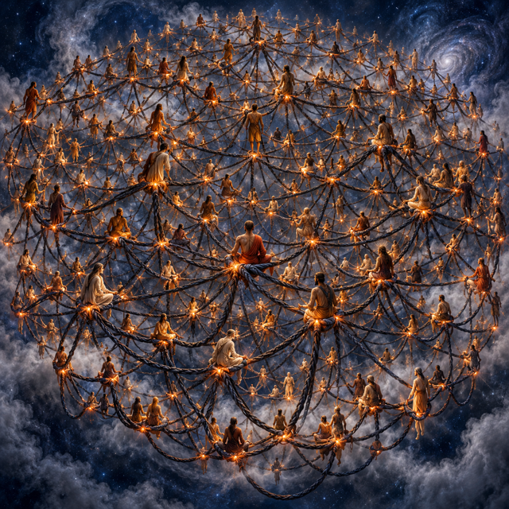
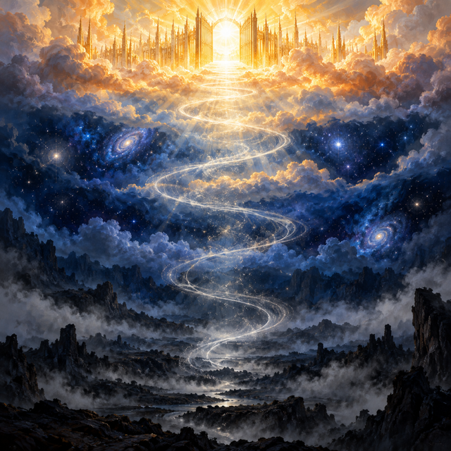
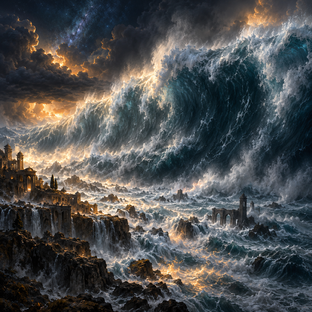
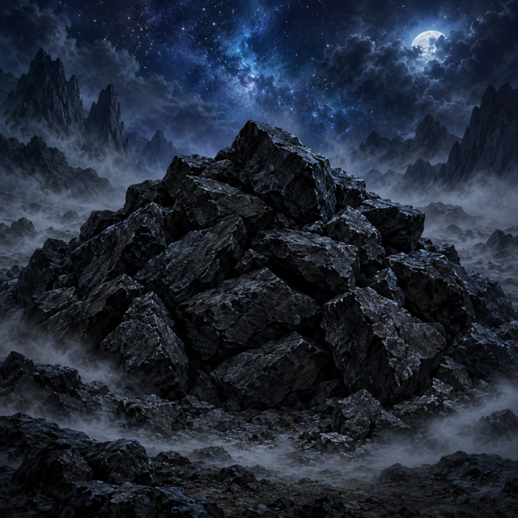

The Watchers: Descent, Teaching, and Binding (1 Enoch 6–10)
The world of this story as one picture dictionary: its events in order, then every place, being and power in it, each with the drawn mark and the painting it carries in the video.
The story, in order (2 events)
- Beautiful daughters are born to the multiplying children of men daughters of menthe Earth
- The earth lays accusation against the lawless ones and the cry of the dying rises to heaven the Earththe Most High
The terms (10): each is drawn this way in every scene

Painteddaughters of men
beingThe beautiful mortal women born to humanity whose loveliness drew the Watchers down from heaven to take them as wives.
Looks: A warm golden-skinned figure draped in flowing cloth, face lit with a gentle radiance, surrounded by soft blossoms that hint at the root-cuttings and plants they were taught.
Facts and source words
- beautiful and comely daughters born to the children of men
- desired by the Watchers who chose them as wives
- taught charms, enchantments, root-cuttings and plants by the Watchers
- bear the Giants by their Watcher husbands
“in those days were born unto them beautiful and comely daughters.” (S1)
“they began to go in unto them and to defile themselves with them, and they taught them charms and enchantments, and the cutting of roots, and made them acquainted with plants.” (S2)

Paintedthe Most High
beingThe Holy and Great One who rules from heaven, receives the cry of the dying, and commands the archangels to judge the guilty and heal the earth.
Looks: A blinding white light seated on a high throne, so bright its edges dissolve into pure radiance, with a golden crown barely visible at the centre of the glare.
- rules from Heaven
- the Earth laid accusation before this
- cry of the dying reaches and moves to judgment this
Facts and source words
- the Holy and Great One, ruler of heaven
- receives the cry of dying men and the accusation of the earth
- commands the four archangels to bind the guilty and warn the righteous
- decrees that all sin be ascribed to Azazel and the earth be healed
“the Most High, the Holy and Great One spake, and sent Uriel to the son of Lamech” (S4)
“And cleanse thou the earth from all oppression, and from all unrighteousness, and from all sin, and from all godlessness” (S4)

Paintedson of Lamech
beingThe righteous son of Lamech whom Uriel warned to hide himself and preserve his seed before the coming flood destroys all life on earth.
Looks: A solitary man in plain earth-coloured robes, standing apart from all others, face turned upward as though receiving urgent whispered instructions from an unseen voice.
Facts and source words
- the righteous man warned by Uriel to hide himself from the coming flood
- instructed so that his seed may be preserved for all the generations of the world
- his survival is the purpose behind the flood warning
“reveal to him the end that is approaching: that the whole earth will be destroyed, and a deluge is about to come upon the whole earth, and will destroy all that is on it.” (S4)
“instruct him that he may escape and his seed may be preserved for all the generations of the world.” (S4)

PaintedHeaven
realmThe highest realm above the world, where the Most High holds his throne and through whose gates the cries of the dying enter to demand judgment.
Looks: A luminous golden band stretching across the very top of the sky, edged with white light, with great gates gleaming at its threshold.
- the Most High rules from this
Facts and source words
- the realm above from which the Watchers descend
- holds the throne of the Most High and the gates through which the cry of the dying enters
- source from which the four archangels are sent down
“the angels, the children of the heaven, saw and lusted after them” (S1)
“as men perished, they cried, and their cry went up to heaven” (S3)

Paintedthe Earth
realmThe mortal world where humanity lives, corrupted by the Watchers' forbidden teachings, which rises in formal accusation before heaven and awaits cleansing.
Looks: A wide grey-blue band of land and sky below the heavenly tier, scarred with dark marks where Azazel's teachings have taken hold, with a faint upward-reaching tremor as though the ground itself is crying out.
- laid accusation before the Most High
Facts and source words
- the world where men live and the Watchers descend to take wives
- corrupted through the works taught by Azazel
- rises to lay accusation against the lawless ones before heaven
- awaits cleansing, healing, and the planting of righteousness
“the earth laid accusation against the lawless ones.” (S2)
“the whole earth has been corrupted through the works that were taught by Azâzêl” (S4)

Paintedvalleys of the earth
realmThe underground valleys deep beneath the surface where the Watcher Semjaza and his associates are bound fast for seventy generations before their final judgment.
Looks: A dark band of shadow beneath the earth's surface, rough-walled and lightless, with dim shapes of bound figures pressed into the stone.
Facts and source words
- the underground valleys where Semjaza and his associates are bound fast
- place of imprisonment for seventy generations
- precedes the final abyss of fire at the consummation of judgment
“bind them fast for seventy generations in the valleys of the earth, till the day of their judgement and of their consummation, till the judgement that is for ever and ever is consummated.” (S4)

Paintedmutual imprecations
powerThe sworn curse by which all two hundred Watchers bound themselves together at Mount Hermon, sharing guilt equally so none could abandon the rest.
Looks: A tangle of dark cords looping around two hundred figures, each cord glowing faintly orange at its knots where it is tied to every other, forming one unbreakable web.
Facts and source words
- a sworn bond by which all two hundred Watchers bind themselves together against abandonment
- ensures that all share the guilt, not Semjaza alone
- gives Mount Hermon its name and seals the fate of all who swear it
“Let us all swear an oath, and all bind ourselves by mutual imprecations not to abandon this plan but to do this thing.” (S1)
“they called it Mount Hermon, because they had sworn and bound themselves by mutual imprecations upon it.” (S1)

Paintedcry of the dying
stateThe voices of men consumed by the Giants, rising with the earth's own accusation through the gates of heaven until they move the Most High to act.
Looks: Thin white spirals of sound ascending from darkened ground upward through the bands of sky, growing brighter as they near the golden gates above.
- reaches and moves to judgment the Most High
Facts and source words
- the voices of men consumed by Giants rising to the gates of heaven
- accompanied by the earth's own formal accusation against the lawless ones
- the cause that moves the Most High to respond with four commands
“as men perished, they cried, and their cry went up to heaven” (S3)
“the earth laid accusation against the lawless ones.” (S2)

Paintedthe deluge
stateThe great deluge decreed by the Most High to destroy all corruption on the earth, from which only Noah and his seed are warned to hide.
Looks: A wall of dark blue-grey water blotting out the horizon, its surface churning beneath a storm-grey sky, vast and inevitable in its approach.
Facts and source words
- a flood about to come upon the whole earth and destroy all that is on it
- decreed by the Most High in response to the earth's corruption
- Noah alone is warned to hide and preserve his seed
“a deluge is about to come upon the whole earth, and will destroy all that is on it.” (S4)

Paintedrough and jagged rocks
objectThe rough, sharp stones heaped over Azazel in his pit in Dudael by Raphael, covering his face in permanent darkness until the fire of final judgment.
Looks: A heap of jagged dark stones piled over a hollow in the ground, every surface sharp and lightless, with no gap for any gleam to reach whatever lies beneath.
Facts and source words
- heaped upon Azazel in his pit in Dudael by Raphael
- keep him in permanent darkness with his face covered so he may never see light
- seal his imprisonment until the fire of the great judgment
“place upon him rough and jagged rocks, and cover him with darkness, and let him abide there for ever, and cover his face that he may not see light.” (S4)
Map of how the terms link (3 links)
49 items were left out because their source words did not match: the Watchers; Semjâzâ; Azâzêl; the Giants; Uriel; Raphael; Gabriel; Michael; Mount Hermon; desert of Dûdâêl; abyss of fire; secret things; descended from as children of; leads; lusted after, chose as wives, and taught forbidden arts to; descended upon and named through their oath; binds all together in shared guilt; taught to men, bearing sole responsibility for; corrupts through godlessness and violence; devoured and ravaged; commands to warn Noah; commands to bind and bury Azazel; commands to destroy the Giants; commands to bind Semjaza and his associates; binds hand and foot and imprisons in Dudael; binds fast in the valleys of the earth; drives to mutual destruction in battle; warns of the coming flood; holds imprisoned under darkness and jagged rocks; holds bound for seventy generations; awaits as final eternal prison; awaits on the day of great judgment; The Watchers see the daughters of men and lust after them; Semjaza fears he alone will pay the penalty and demands a shared oath from all two hundred; All two hundred Watchers swear together and bind themselves by mutual imprecations on Mount Hermon, giving it its name; Two hundred Watchers descend onto the summit of Mount Hermon and each takes a wife from among the daughters of men; Azazel teaches men to forge swords, knives, shields and breastplates, to work metals, and to use ornaments and cosmetics; The Watchers teach their wives charms, enchantments, root-cuttings, astrology, constellations, and the signs of the sun and moon; Godlessness, fornication and corruption spread across the earth through what was taught; The wives of the Watchers conceive and bear Giants of three thousand ells in height; The Giants consume all the food and acquisitions of men until men can no longer sustain them; The Giants turn against and devour mankind; The Giants sin against all creatures and begin devouring one another's flesh and drinking blood; The Most High commands Uriel to warn the son of Lamech of the coming flood; The Most High commands Raphael to bind Azazel hand and foot and cast him into the desert of Dudael; Raphael binds Azazel, opens a pit in Dudael, casts him in, and heaps jagged rocks upon him so he may never see light; The Most High commands Gabriel to send the Giants against one another until they destroy each other in battle; After their sons have slain one another, Michael binds Semjaza and his associates in the valleys of the earth for seventy generations; Azazel lies buried in Dudael in eternal darkness under jagged rocks, all sin ascribed to him, awaiting the fire of the great judgment